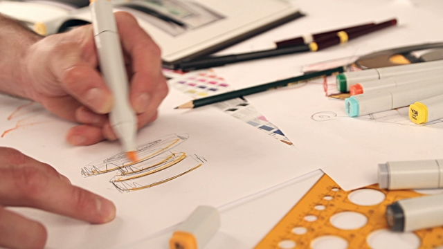

What is my hobbies ?
Swimming
My favourite hobby is swimming. I go swimming every Monday and Tuesday Swimming is a sport for everyone and it is a great way to stay fit. You do not have to swim professionally. You can swim in your own free time or you can swim on a competitive team. My favourite stroke is breaststroke. In this stroke the arms and legs work in turn, first the arms pull, then the legs kick and the whole body glides forward with arms and legs straight, you push off for the first stroke, he or she stretches out on the water with the thumbs touching the palms facing downwards.

Running
One of my hobbies is running. I really like running because first of all it's very cheap. It doesn't cost you any money. You can do it anywhere, for example, on a city street and it's a healthy hobby. Whenever possible, I try to run outside in nature. It's best for your body to run on dirt.

Drawing
I started drawing because it gave me opportunities to express myself; it was the very first time I engaged myself in anything artistic and expressive. I draw when I am inspired, when I want to practice a certain skill, or when I want to portray ideas to people. To me, drawing is a way to put part of myself in a work of art, whether it be a sketch in my notebook or a vector illustration, and to express my identity to other people.
